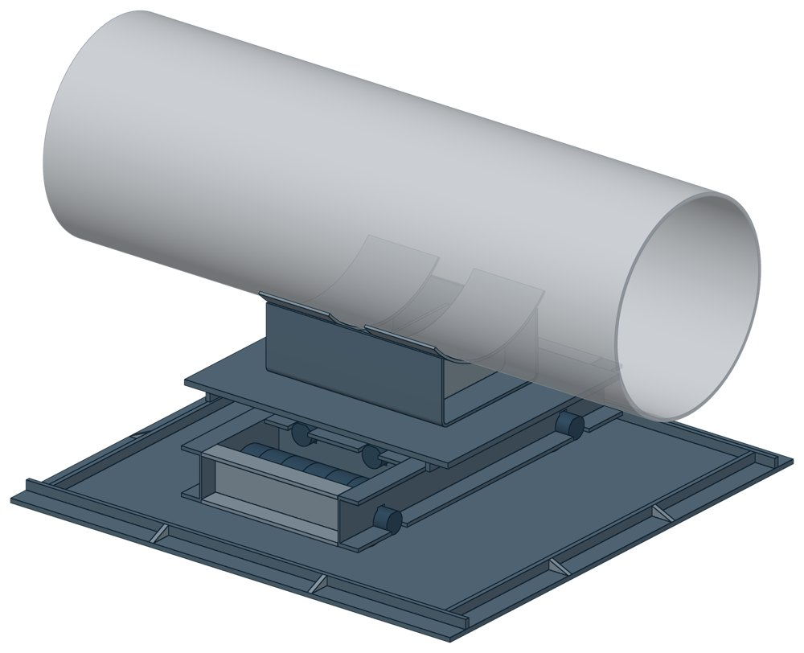
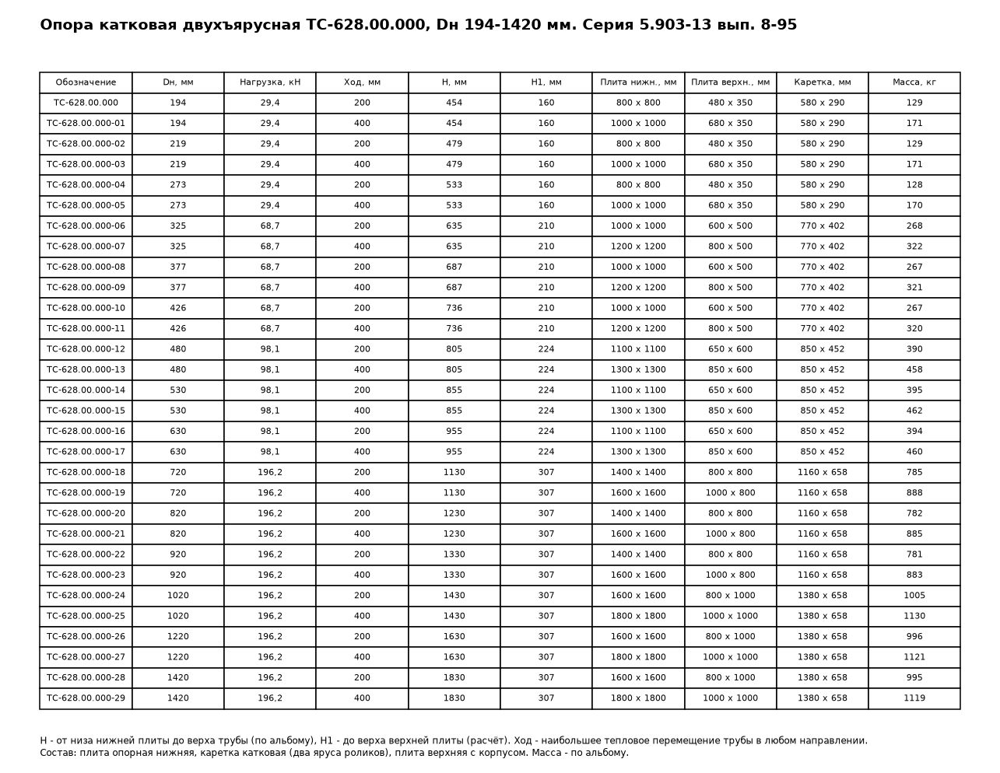

Опора катковая двухъярусная ТС-628
Катковая двухъярусная опора: между нижней и верхней плитами стоит каретка с двумя ярусами роликов — нижние оси поперёк, верхние вдоль. Труба на корпусе перемещается по горизонтали в двух направлениях.

- Диаметр трубы Dн
- 194–1420 мм
- Документ
- Серия 5.903-13 вып. 8-95
- Исполнений
- 30
- Допустимая нагрузка
- до 196,2 кН
- Масса
- 128–1130 кг
- 3D-модели
- у всех исполнений
Применение и монтаж
Назначение: где применяется
Трубопроводы тепловых сетей Dн 194–1420 мм. Допустимая нагрузка от 29,4 до 196,2 кН — по диаметру. Наибольшее горизонтальное перемещение — 200 или 400 мм. СП 124.13330.2012, п. 10.34 отводит катковым опорам трубы диаметром 200 мм и более при прокладке в тоннелях, на кронштейнах, на отдельно стоящих опорах и эстакадах. В районах с сейсмичностью 8 и 9 баллов катковые и шариковые опоры не допускаются (п. 16.11).
Монтаж: как устанавливается
Нижнюю плиту ставят на опорную конструкцию, на неё — каретку, сверху — верхнюю плиту с корпусом. Подушки корпуса приваривают к трубе. Перед установкой каретки проверяют смазку в пазах между осями и роликами (ЦИАТИМ-203).
Отличия от соседних типов
Перемещение только вдоль или только поперёк оси и диаметр 720–1420 мм — катковая ТС-630, она рассчитана на перемещение до 800 мм. Катковые опоры по условиям не проходят — скользящие ТС-624, ТС-626, ТС-627.
Габаритная схема ТС-628

Состав комплекта на одну опору
| Плита опорная нижняя | 1 шт. |
| Каретка катковая (рама из швеллеров, ролики, оси) | 1 шт. |
| Плита опорная верхняя | 1 шт. |
| Корпус сварной (скоба, подушки, рёбра) | 1 шт. |
Таблица исполнений ТС-628
| Обозначение | Код ПРОМБУРГ | Dнмм | Допустимая нагрузкакН | Δ maxмм | Ширина Вкмм | Высота Нмм | Высота Н1мм | Габарит Lмм | Длина lкмм | Массакг | 3D |
|---|---|---|---|---|---|---|---|---|---|---|---|
| ТС-628.00.000 | ПБ-628-0194-1 | 194 | 29,4 | 200 | 290 | 454 | 160 | 800 | 580 | 129 | 3D |
| ТС-628.00.000-01 | ПБ-628-0194-2 | 194 | 29,4 | 400 | 290 | 454 | 160 | 1000 | 580 | 171 | 3D |
| ТС-628.00.000-02 | ПБ-628-0219-1 | 219 | 29,4 | 200 | 290 | 479 | 160 | 800 | 580 | 129 | 3D |
| ТС-628.00.000-03 | ПБ-628-0219-2 | 219 | 29,4 | 400 | 290 | 479 | 160 | 1000 | 580 | 171 | 3D |
| ТС-628.00.000-04 | ПБ-628-0273-1 | 273 | 29,4 | 200 | 290 | 533 | 160 | 800 | 580 | 128 | 3D |
| ТС-628.00.000-05 | ПБ-628-0273-2 | 273 | 29,4 | 400 | 290 | 533 | 160 | 1000 | 580 | 170 | 3D |
| ТС-628.00.000-06 | ПБ-628-0325-1 | 325 | 68,7 | 200 | 402 | 635 | 210 | 1000 | 770 | 268 | 3D |
| ТС-628.00.000-07 | ПБ-628-0325-2 | 325 | 68,7 | 400 | 402 | 635 | 210 | 1200 | 770 | 322 | 3D |
| ТС-628.00.000-08 | ПБ-628-0377-1 | 377 | 68,7 | 200 | 402 | 687 | 210 | 1000 | 770 | 267 | 3D |
| ТС-628.00.000-09 | ПБ-628-0377-2 | 377 | 68,7 | 400 | 402 | 687 | 210 | 1200 | 770 | 321 | 3D |
| ТС-628.00.000-10 | ПБ-628-0426-1 | 426 | 68,7 | 200 | 402 | 736 | 210 | 1000 | 770 | 267 | 3D |
| ТС-628.00.000-11 | ПБ-628-0426-2 | 426 | 68,7 | 400 | 402 | 736 | 210 | 1200 | 770 | 320 | 3D |
| ТС-628.00.000-12 | ПБ-628-0480-1 | 480 | 98,1 | 200 | 452 | 805 | 255 | 1100 | 850 | 390 | 3D |
| ТС-628.00.000-13 | ПБ-628-0480-2 | 480 | 98,1 | 400 | 452 | 805 | 255 | 1300 | 850 | 458 | 3D |
| ТС-628.00.000-14 | ПБ-628-0530-1 | 530 | 98,1 | 200 | 452 | 855 | 255 | 1100 | 850 | 395 | 3D |
| ТС-628.00.000-15 | ПБ-628-0530-2 | 530 | 98,1 | 400 | 452 | 855 | 255 | 1300 | 850 | 462 | 3D |
| ТС-628.00.000-16 | ПБ-628-0630-1 | 630 | 98,1 | 200 | 452 | 955 | 255 | 1100 | 850 | 394 | 3D |
| ТС-628.00.000-17 | ПБ-628-0630-2 | 630 | 98,1 | 400 | 452 | 955 | 255 | 1300 | 850 | 460 | 3D |
| ТС-628.00.000-18 | ПБ-628-0720-1 | 720 | 196,2 | 200 | 658 | 1130 | 310 | 1400 | 1160 | 785 | 3D |
| ТС-628.00.000-19 | ПБ-628-0720-2 | 720 | 196,2 | 400 | 658 | 1130 | 310 | 1600 | 1160 | 888 | 3D |
| ТС-628.00.000-20 | ПБ-628-0820-1 | 820 | 196,2 | 200 | 658 | 1230 | 310 | 1400 | 1160 | 782 | 3D |
| ТС-628.00.000-21 | ПБ-628-0820-2 | 820 | 196,2 | 400 | 658 | 1230 | 310 | 1600 | 1160 | 885 | 3D |
| ТС-628.00.000-22 | ПБ-628-0920-1 | 920 | 196,2 | 200 | 658 | 1330 | 310 | 1400 | 1160 | 781 | 3D |
| ТС-628.00.000-23 | ПБ-628-0920-2 | 920 | 196,2 | 400 | 658 | 1330 | 310 | 1600 | 1160 | 883 | 3D |
| ТС-628.00.000-24 | ПБ-628-1020-1 | 1020 | 196,2 | 200 | 658 | 1430 | 310 | 1600 | 1380 | 1005 | 3D |
| ТС-628.00.000-25 | ПБ-628-1020-2 | 1020 | 196,2 | 400 | 658 | 1430 | 310 | 1800 | 1380 | 1130 | 3D |
| ТС-628.00.000-26 | ПБ-628-1220-1 | 1220 | 196,2 | 200 | 658 | 1630 | 310 | 1600 | 1380 | 996 | 3D |
| ТС-628.00.000-27 | ПБ-628-1220-2 | 1220 | 196,2 | 400 | 658 | 1630 | 310 | 1800 | 1380 | 1121 | 3D |
| ТС-628.00.000-28 | ПБ-628-1420-1 | 1420 | 196,2 | 200 | 658 | 1830 | 310 | 1600 | 1380 | 995 | 3D |
| ТС-628.00.000-29 | ПБ-628-1420-2 | 1420 | 196,2 | 400 | 658 | 1830 | 310 | 1800 | 1380 | 1119 | 3D |
Чтобы заказать, сообщите обозначение и код ПРОМБУРГ: +7 (499) 325-51-35, promburg@yandex.ru.
Нормативные документы
- Серия 5.903-13 вып. 8-95 Опоры трубопроводов подвижные. Рабочие чертежи (PDF, 199 с.) — документ, по которому изготавливается изделие
- СП 124.13330.2012 Тепловые сети. Актуализированная редакция СНиП 41-02-2003
Связанные позиции
- Соседний тип: ТС-630 — Катковые опоры
На трубу Dн 194–1420 мм в каталоге
Позиции каталога с исполнениями на те же наружные диаметры трубы.
Детали трубопровода
- Фланец стальной плоский приварной общих Dн: 14
- Фланец стальной воротниковый общих Dн: 13
- Отвод стальной крутоизогнутый 90° общих Dн: 11
- Днище стальное эллиптическое общих Dн: 9
- Отвод стальной крутоизогнутый 90°, 09Г2С общих Dн: 9
- Заглушка стальная эллиптическая общих Dн: 7
- Переход стальной концентрический общих Dн: 6
- Отвод нержавеющий 90° общих Dн: 1
Компенсаторы
- Компенсатор сильфонный КСО общих Dн: 13
- Компенсатор сильфонный КСОФ общих Dн: 13
- Компенсатор сильфонный стартовый СК общих Dн: 13
- Компенсатор сильфонный 2ОПКР общих Dн: 12
- Компенсатор сильфонный 2ОПКР (ИЯНШ) 2ОПКРИ общих Dн: 12
- Компенсатор сильфонный 2СКУ.М 2СКУМ общих Dн: 12
- Компенсатор сильфонный 2СКУ.М (ИЯНШ) 2СКУМИ общих Dн: 12
- Компенсатор сильфонный 2СКУ.ППМ (ИЯНШ) 2СКУППМИ общих Dн: 12
- Компенсатор сильфонный КС общих Dн: 12
- Компенсатор сильфонный КСО (ИЯНШ) КСОИ общих Dн: 12
- Компенсатор сильфонный ОПКР общих Dн: 12
- Компенсатор сильфонный ОПКР (ИЯНШ) ОПКРИ общих Dн: 12
- Компенсатор сильфонный сейсмический общих Dн: 12
- Компенсатор сильфонный СКУ.М СКУМ общих Dн: 12
И ещё 20 типов — в оглавлении каталога.
Другие опоры и подвески
- Опора скользящая приварная ТС-624 общих Dн: 15
- Опора скользящая хомутовая ТС-626 общих Dн: 15
- Опорные плиты диэлектрические ТС-632 общих Dн: 15
- Опоры приварные неподвижные скользящие ОПН общих Dн: 15
- Опоры пружинные подвесные Т41 общих Dн: 15
- Хомутовые опоры СК 2109-92 общих Dн: 14
- Балки опорные с проушинами ОСТ 24-125-121-01 общих Dн: 14
- Балки опорные для пружин ОСТ 24-125-124-01 общих Dн: 14
- Опора неподвижная двухупорная ТС-660 общих Dн: 13
- Опора неподвижная четырёхупорная ТС-661 общих Dн: 13
И ещё 91 тип — в оглавлении каталога.
Другие типы раздела
Скользящие и катковые опоры тепловых сетей (ТС-623…ТС-632)
- Опора скользящая приварная ТС-623
- Опора скользящая приварная ТС-624
- Опора скользящая с плоским хомутом ТС-625
- Опора скользящая хомутовая ТС-626
- Опора скользящая бугельная ТС-627
- Катковые опоры ТС-630
- Опоры сварных отводов ТС-631
- Опорные плиты диэлектрические ТС-632
Частые вопросы
Чем неподвижная опора отличается от подвижной?
Неподвижная закрепляет трубу в одной точке и принимает усилия от температурного расширения, давления и трения. Подвижная держит вес трубы и даёт ей перемещаться при нагреве. Неподвижные делят трассу на участки компенсации, подвижные стоят между ними. Место и тип каждой опоры задаёт проект.
Скользящая или катковая опора?
По СП 124.13330.2012 (п. 10.34) скользящие опоры применяют при всех способах прокладки и для всех диаметров труб. Катковые — для труб диаметром 200 мм и более при осевом перемещении, при прокладке в тоннелях, на кронштейнах, на отдельно стоящих опорах и эстакадах. Катковая опора снижает силу трения, которая передаётся на неподвижные опоры.
На каком расстоянии ставить опоры?
По СП 124.13330.2012 (п. 10.5) максимальные расстояния между подвижными опорами на прямых участках определяют расчётом на прочность и по допускаемому прогибу. Готового шага «по диаметру» норматив не даёт: пролёт задаёт проект.
Какую нагрузку выдерживает опора?
Допускаемая нагрузка задана в таблице для каждого исполнения — она в первой группе колонок каждой карточки. Хомутовая ТС-659 — осевая Q от 5 до 25 кН, щитовая ТС-666 — от 50 до 3300 кН, хомутовая с корпусом ТС-670 — Q до 380 кН и боковая T до 200 кН.
В старом проекте нагрузка в тс, а здесь в кН. Как сравнить?
Серия 4.903-10 даёт нагрузки в тонна-силах, серия 5.903-13 — в килоньютонах. 1 тс = 9,81 кН, то есть 10 тс — это около 98 кН. В таблицах каталога переключатель единиц пересчитывает значения.
Что указать в заявке, чтобы получить цену без уточнений?
Обозначение с номером исполнения или код ПБ, количество, Dн и стенку трубы, расчётную температуру наружного воздуха, покрытие, город доставки и желаемый срок. Кнопка «В заявку» в таблице собирает спецификацию, которую можно выгрузить в Excel или отправить письмом.